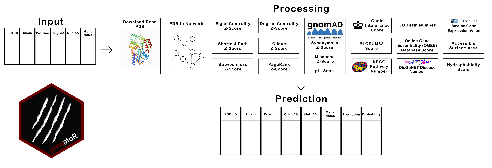

Introduction to predatoR
Berk Gurdamar
2022-08-18
Source:vignettes/predatoR_Vignette.Rmd
predatoR_Vignette.RmdQuick Start
In this section, we show you how to use predatoR package for mutation impact prediction.
predatoR package makes prediction about impact of a mutation based on an Adaboost model and classifies the mutations as Pathogenic or Neutral. Model was created by using Varibench and ClinVar datasets. Missense3D dataset also used for model validation.
Installation
You can install the predatoR via devtools:
Workflow

predatoR() function is the wrapper function of the predatoR package. predatoR() gets a data.frame structure as an input. Input should contain 5 mandatory and 1 optional columns. Mandatory columns are ‘PDB_ID’, ‘Chain’, ‘Position’, ‘Orig_AA’ and ‘Mut_AA’. ‘Gene_Name’ column is optional. Predictions can be made by using 2 different models, 7 Angstrom (Å)-all atoms model and 7Å-carbon alpha (Cα) atoms only model.
predatoR() function works on each PDB ID respectively. For each PDB ID;
- Downloads/Reads PDB file
- Calculates distance between each atom in the structure
- Creates a network from PDB
- Calculates Degree Centrality Z-Score of each atom
- Calculates Eigen Centrality Z-Score of each atom
- Calculates Shortest Path Z-Score of each atom
- Calculates Betweenness Z-Score of each atom
- Calculates Clique Z-Score of each atom
- Calculates PageRank Z-Score of each atom
- Gets gnomAD Synonymous Z-Score, Missense Z-Score, and pLI Score
- Gets BLOSUM62 score of the mutation
- Finds the number of KEGG Pathways which contains the input gene
- Gets Genic Intolerance Score
- Finds the number of GO terms associated with the input gene
- Finds the number of diseases associated with the input gene from DisGeNET
- Gets the Gene Essentiality Score from Online Gene Essentiality (OGEE) Database
- Calculates the median gene expression value of the input gene from GTEx
- Calculates 6 different features from Accessible Surface Area and Hydrophobicity Scale of reference and mutant amino acids
- Makes prediction
If predatoR() couldn’t find any information of any gene such as ‘Genic Intolerance Score’, those inputs will be removed from the query before the prediction step.
Arguments
predatoR() function has 6 arguments;
- info_df: Input data.frame
- PDB_path: PDB file path if the user wants to use PDB structures stored locally (default = NULL)
- n_threads: Number of threads (default = NULL)
- gene_name_info: Whether there is gene name information in the input or not (default = TRUE)
- distance_cutoff: distance cutoff for setting edges (default = 7)
- network_approach: network building approach; “all” (default) for using all atoms or “ca” for using Cα atoms only
When running the predatoR() function, if gene name is included in the input, gene_name_info should be set as TRUE. If there is no gene name information in the input (gene_name_info = FALSE), predatoR() function gets the related gene names from Ensembl and if there are multiple genes annotated for the PDB ID, choose the gene having the higher gnomAD metrics.
predatoR() can make predictions using only 7Å distance cutoff. For exploratory purposes, different cutoffs can be used and network properties can be calculated.
Example input with the ‘Gene_Name’ information included:
| PDB_ID | Chain | Position | Orig_AA | Mut_AA | Gene_Name |
|---|---|---|---|---|---|
| 3SQJ | A | 196 | GLN | LEU | ALB |
| 3SQJ | A | 396 | GLU | LYS | ALB |
Example input with the ‘Gene_Name’ information does not included:
| PDB_ID | Chain | Position | Orig_AA | Mut_AA |
|---|---|---|---|---|
| 3SQJ | A | 196 | GLN | LEU |
| 3SQJ | A | 396 | GLU | LYS |
prediction_result <- predatoR(test_data, gene_name_info = FALSE)predatoR() function can also work with no gene name inputs. If a mutation has no gene name information, it gets the related gene names from Ensembl and if there are multiple genes annotated for the PDB ID, gets the gene which has maximum GnomAD scores (gene_name_info should set as TRUE).
| PDB_ID | Chain | Position | Orig_AA | Mut_AA | Gene_Name |
|---|---|---|---|---|---|
| 3SQJ | A | 196 | GLN | LEU | ALB |
| 3SQJ | A | 396 | GLU | LYS | ALB |
| 1A4Y | A | 169 | PRO | LEU |
prediction_result <- predatoR(test_data, gene_name_info = TRUE)predatoR() function uses max_thread_number - 1 as a default when n_threads = NULL. n_threads can be set by user.
prediction_result <- predatoR(test_data, n_threads = 8) # 8 threads will be usedpredatoR() function downloads each PDB by default (PDB_path = NULL) or can use PDB files stored locally when PDB_path specified. It will automatically read and process the input PDB file from the path.
prediction_result <- predatoR(test_data, PDB_path = "path/to/PDB/files/") Result
predatoR() function returns a data.frame which contains additional two columns; ‘Prediction’ and ‘Probability’. ‘Prediction’ represents the result of the impact prediction and ‘Probability’ represents the probability that the mutation classified as Pathogenic or Neutral.
| PDB_ID | Chain | Position | Orig_AA | Mut_AA | Gene_Name | Prediction | Probability |
|---|---|---|---|---|---|---|---|
| 3SQJ | A | 196 | GLN | LEU | ALB | Neutral | 0.6521832 |
| 3SQJ | A | 396 | GLU | LYS | ALB | Neutral | 0.6009792 |
Exploratory Usage
Network properties can be calculated by using different distance cutoffs. In this approach, predatoR() does not make any prediction about the mutation, but returns a data frame contains all 24 features annotated to the dataset. Both network formalisation approaches also can be used.
Utility Functions
The wrapper function predatoR() uses the utility functions below;
read_PDB()PDB2connections()degree_score()eigen_centrality_score()shorteset_path_score()betweenness_score()clique_score()pagerank_score()gnomad_scores()BLOSUM62_score()KEGG_pathway_number()genic_intolerance()GO_terms()DisGeNET()gene_essentiality()GTEx()amino_acid_features()impact_prediction()
read_PDB
read_PDB() function downloads input PDB by default but can read and process locally stored PDB structures. After reading, create a matrix that contains only ATOM labelled structures.
Arguments
read_PDB() has 3 arguments;
- PDB_ID: PDB ID (E.g. “3SQJ”)
- PDB_path: PDB file path if files stored locally (default = FALSE)
- network_approach: network building approach; “all” (default) for using all atoms or “ca” for using Cα atoms only
PDB2connections
PDB2connections() function calculates distances between each ATOM in the PDB structure and creates an edge between atoms if the distance <= 7Å. As a result, returns a list contains data frames of different chains interactions.
Arguments
PDB2connections() has 5 arguments;
-
atom_matrix: Matrix created by
read_PDB()function - filtered_info_df: data.frame contains only one PDB entries
- n_threads: number of threads (default = NULL)
-
single_run: should be set as TRUE when using
PDB2connections()function alone (default = TRUE) - distance_cutoff: distance cutoff for setting edges (default = 7)
Usage
test_data <- as.data.frame(rbind(c("3SQJ", "A", 3, "HIS", "GLN", "ALB"),
c("3SQJ", "A", 60, "GLU", "LYS","ALB")))
colnames(test_data) <- c("PDB_ID", "Chain", "Position", "Orig_AA", "Mut_AA", "Gene_Name")
edge_list <- PDB2connections(atom_matrix = PDB_2DN2_structure, filtered_info_df = test_data, n_threads = 8, single_run = TRUE)
degree_score
degree_score() function calculates the total number of connections of all nodes. Calculates Z-scores of each node and returns scores of desired nodes.
Arguments
degree_score() has 2 arguments;
-
edge_list: List created by
PDB2connections()function - filtered_info_df: data.frame contains only one PDB entries
Usage
test_data <- as.data.frame(rbind(c("3SQJ", "A", 3, "HIS", "GLN", "ALB"),
c("3SQJ", "A", 60, "GLU", "LYS","ALB")))
colnames(test_data) <- c("PDB_ID", "Chain", "Position", "Orig_AA", "Mut_AA", "Gene_Name")
degree_z_score <- degree_score(edge_list = edge_list, filtered_info_df = test_data)
eigen_centrality_score
eigen_centrality_score() function calculates the total number of connections of nodes to which a node is connected. Calculates Z-scores of all nodes and returns scores of desired nodes.
Arguments
eigen_centrality_score() has 2 arguments;
-
edge_list: List created by
PDB2connections()function - filtered_info_df: data.frame contains only one PDB entries
Usage
test_data <- as.data.frame(rbind(c("3SQJ", "A", 3, "HIS", "GLN", "ALB"),
c("3SQJ", "A", 60, "GLU", "LYS","ALB")))
colnames(test_data) <- c("PDB_ID", "Chain", "Position", "Orig_AA", "Mut_AA", "Gene_Name")
eigen_centrality_z_score <- eigen_centrality_score(edge_list = edge_list, filtered_info_df = test_data)
shorteset_path_score
shorteset_path_score() function calculates the distances between each node via shortest.paths() function of igraph package, sum distances of each nodes, calculates Z-scores and returns scores of desired nodes.
Arguments
shorteset_path_score() has 2 arguments;
-
edge_list: List created by
PDB2connections()function - filtered_info_df: data.frame contains only one PDB entries
Usage
test_data <- as.data.frame(rbind(c("3SQJ", "A", 3, "HIS", "GLN", "ALB"),
c("3SQJ", "A", 60, "GLU", "LYS","ALB")))
colnames(test_data) <- c("PDB_ID", "Chain", "Position", "Orig_AA", "Mut_AA", "Gene_Name")
shorteset_path_z_score <- shorteset_path_score(edge_list = edge_list, filtered_info_df = test_data)
betweenness_score
betweenness_score() function calculates Betweenness Score of each node by using betweenness() function of igraph package, turns the scores into Z-scores and returns scores of desired nodes.
Arguments
betweenness_score() has 2 arguments;
-
edge_list: List created by
PDB2connections()function - filtered_info_df: data.frame contains only one PDB entries
Usage
test_data <- as.data.frame(rbind(c("3SQJ", "A", 3, "HIS", "GLN", "ALB"),
c("3SQJ", "A", 60, "GLU", "LYS","ALB")))
colnames(test_data) <- c("PDB_ID", "Chain", "Position", "Orig_AA", "Mut_AA", "Gene_Name")
betweenness_z_score <- betweenness_score(edge_list = edge_list, filtered_info_df = test_data)
clique_score
clique_score() function calculates Clique score of each atom and turns the desired nodes’ scores into Z-scores.
Arguments
clique_score() has 4 arguments;
-
edge_list: List created by
PDB2connections()function - filtered_info_df: data.frame contains only one PDB entries
- n_threads: number of threads (default = NULL)
-
single_run: should be set as TRUE when using
clique_score()function alone (default = TRUE)
Usage
test_data <- as.data.frame(rbind(c("3SQJ", "A", 3, "HIS", "GLN", "ALB"),
c("3SQJ", "A", 60, "GLU", "LYS","ALB")))
colnames(test_data) <- c("PDB_ID", "Chain", "Position", "Orig_AA", "Mut_AA", "Gene_Name")
clique_z_score <- clique_score(edge_list = edge_list, filtered_info_df = test_data, n_threads = 8, single_run = TRUE)
pagerank_score
pagerank_score() function assigns an importance score to every node via page_rank() function of igraph package. Turns the scores into Z-scores and returns scores of desired nodes.
Arguments
pagerank_score() has 2 arguments;
-
edge_list: List created by
PDB2connections()function - filtered_info_df: data.frame contains only one PDB entries
Usage
test_data <- as.data.frame(rbind(c("3SQJ", "A", 3, "HIS", "GLN", "ALB"),
c("3SQJ", "A", 60, "GLU", "LYS","ALB")))
colnames(test_data) <- c("PDB_ID", "Chain", "Position", "Orig_AA", "Mut_AA", "Gene_Name")
pagerank_z_score <- pagerank_score(edge_list = edge_list, filtered_info_df = test_data)
gnomad_scores
gnomad_scores() function gets input gene’s gnomAD Synonymous Z-Score, Missense Z-Score, and PLI Score from data retrieved from gnomAD. If there is no gene name information in the input, gnomad_scores() finds the genes that related with input PDB chain ID by using a dataset retrieved from Ensembl. If there are multiple genes annotated for same PDB, gnomad_scores() function gets the gene that has maximum Synonymous Z-Score, Missense Z-Score, and pLI Score.
Arguments
gnomad_scores() has 1 arguments;
- filtered_info_df: data.frame contains only one PDB entries
Usage
test_data <- as.data.frame(rbind(c("3SQJ", "A", 3, "HIS", "GLN", "ALB"),
c("3SQJ", "A", 60, "GLU", "LYS","ALB")))
colnames(test_data) <- c("PDB_ID", "Chain", "Position", "Orig_AA", "Mut_AA", "Gene_Name")
gnomad_score <- gnomad_scores(filtered_info_df = test_data)
BLOSUM62_score
BLOSUM62_score() function returns BLOSUM62 scores of input mutations.
Usage
test_data <- as.data.frame(rbind(c("3SQJ", "A", 3, "HIS", "GLN", "ALB"),
c("3SQJ", "A", 60, "GLU", "LYS","ALB")))
colnames(test_data) <- c("PDB_ID", "Chain", "Position", "Orig_AA", "Mut_AA", "Gene_Name")
BLOSUM62_scores <- BLOSUM62_score(info_df = test_data)
KEGG_pathway_number
KEGG_pathway_number() function finds the number of KEGG Pathways which related with the input genes.
Arguments
KEGG_pathway_number() has 1 arguments;
- filtered_info_df: input data.frame contains only one PDB entries
Usage
test_data <- as.data.frame(rbind(c("3SQJ", "A", 3, "HIS", "GLN", "ALB"),
c("3SQJ", "A", 60, "GLU", "LYS","ALB")))
colnames(test_data) <- c("PDB_ID", "Chain", "Position", "Orig_AA", "Mut_AA", "Gene_Name")
KEGG_path_number <- KEGG_pathway_number(filtered_info_df = test_data)
genic_intolerance
genic_intolerance() function returns Genic Intolerance score by using a dataset retrieved from Genic Intolerance.
Arguments
genic_intolerance() has 1 arguments;
- filtered_info_df: input data.frame contains only one PDB entries
Usage
test_data <- as.data.frame(rbind(c("3SQJ", "A", 3, "HIS", "GLN", "ALB"),
c("3SQJ", "A", 60, "GLU", "LYS","ALB")))
colnames(test_data) <- c("PDB_ID", "Chain", "Position", "Orig_AA", "Mut_AA", "Gene_Name")
genic_intolerance_score <- genic_intolerance(filtered_info_df = test_data)
GO_terms
GO_terms() function returns the number of GO terms related with the input genes.
Arguments
GO_terms() has 1 arguments;
- filtered_info_df: input data.frame contains only one PDB entries
DisGeNET
DisGeNET() function returns number of diseases related with input genes by using a dataset retrieved from DisGeNET.
Arguments
DisGeNET() has 1 arguments;
- filtered_info_df: input data.frame contains only one PDB entries
gene_essentiality
gene_essentiality() function returns Gene Essentiality scores of the input genes by using a dataset retrieved from Online Gene Essentiality (OGEE) Database.
Arguments
gene_essentiality() has 1 arguments;
- filtered_info_df: input data.frame contains only one PDB entries
Usage
test_data <- as.data.frame(rbind(c("3SQJ", "A", 3, "HIS", "GLN", "ALB"),
c("3SQJ", "A", 60, "GLU", "LYS","ALB")))
colnames(test_data) <- c("PDB_ID", "Chain", "Position", "Orig_AA", "Mut_AA", "Gene_Name")
gene_essentiality_score <- gene_essentiality(filtered_info_df = test_data)
GTEx
GTEx() function calculates the median gene expression value with using 54 different tissue types’ median gene expression value from GTEx and returns the value of input gene.
amino_acid_features
amino_acid_features() function returns 6 different features:
- Accessible Surface Area of reference amino acid
- Accessible Surface Area of mutant amino acid
- Accessible Surface Area difference of mutant and reference amino acid
- Hydrophobicity Scale of reference amino acid
- Hydrophobicity Scale of mutant amino acid
- Hydrophobicity Scale difference of mutant and reference amino acid
Arguments
amino_acid_features() has 1 arguments;
- info_df: input data.frame contains all the mutations
Usage
test_data <- as.data.frame(rbind(c("3SQJ", "A", 3, "HIS", "GLN", "ALB"),
c("3SQJ", "A", 60, "GLU", "LYS","ALB")))
colnames(test_data) <- c("PDB_ID", "Chain", "Position", "Orig_AA", "Mut_AA", "Gene_Name")
gene_essentiality_score <- amino_acid_features(info_df = test_data)
impact_prediction
impact_prediction() function makes impact prediction and classifies the mutation as Pathogenic or Neutral.
Arguments
impact_prediction() has 3 arguments;
- final_df: data.frame contains all the required information for impact prediction
- distance_cutoff: distance cutoff for setting edges (default = 7)
- network_approach: network building approach; “all” (default) for using all atoms or “ca” for using Cα atoms only
Usage
From an input data.frame containing PDB_ID, Chain, Position, Orig_AA, Mut_AA, Gene_Name, degree_z_score, eigen_z_score, shortest_path_z, betwenness_scores_z, clique_z_score, pagerank_z_score, syn_z, mis_z, pLI, blosum62_scores, kegg_pathway_number, genic_intolerance, go_terms, disgenet, gene_essentiality, gtex, ref_asa, mut_asa, asa_diff, ref_hyd, mut_hyd and hyd_diff scores impact_prediction() function classifies the mutation as Pathogenic or Neutral.
Example input:
prediction_result <- impact_prediction(final_df) | PDB_ID | Chain | Position | Orig_AA | Mut_AA | Gene_Name | Prediction | Probability |
|---|---|---|---|---|---|---|---|
| 3SQJ | A | 196 | GLN | LEU | ALB | Neutral | 0.6521832 |
| 3SQJ | A | 396 | GLU | LYS | ALB | Neutral | 0.6009792 |